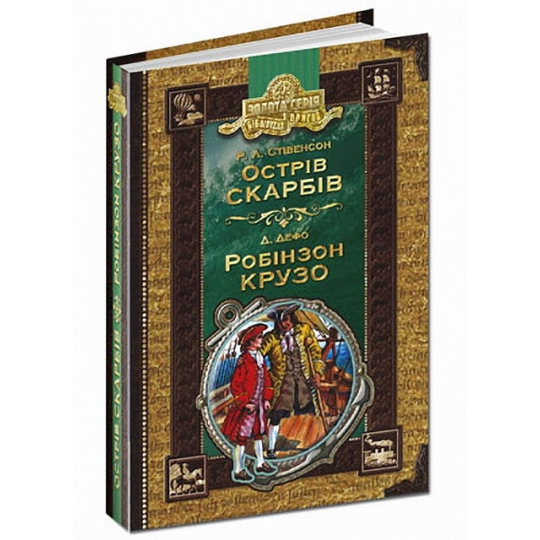
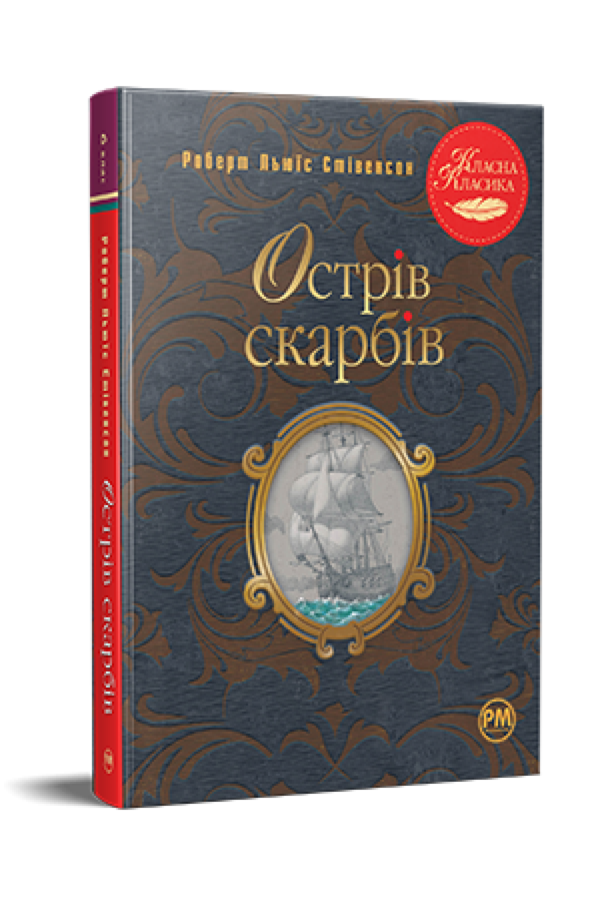

Машіро

Обкладинка книги
Назва книги: Робінзон Крузо
Автор: Деніель Дефо
Жанр: Пригодницький роман, робінзонада
Рік першого видання: 1719
Роман розповідає про незвичайні пригоди моряка Робінзона Крузо, який зазнав корабельної аварії і провів 28 років на безлюдному острові біля берегів Венесуели. Завдяки своєму розуму, наполегливості та стійкості він зумів вижити, побудувати житло, виростити врожай і навіть знайти вірного друга — П'ятницю. Це захоплива оповідь про силу людського духу перед лицем природи та самотності.
Роман «Робінзон Крузо» вважається першим реалістичним романом в англійській літературі. Дефо розповідає історію від першої особи, що надає оповіді особливої достовірності. Головний герой не лише виживає на острові — він відтворює цивілізацію з нуля: сам опановує ремесла, землеробство, тваринництво. Книга пронизана духом просвітництва: людина здатна підкорити природу розумом і працею. Це читається і як захоплива пригода, і як гімн людській стійкості.
Робінзон Крузо народився 1632 року в Йорку в родині купця-емігранта з Бремена. Його батько хотів, щоб син обрав солідну юридичну кар'єру, проте серце Робінзона з дитинства лежало до моря та мандрів.
Попри благання батьків, він у вісімнадцять років таємно вступив на корабель, що відпливав до Лондона. Перший рейс виявився жахливим: на Біскайській затоці потрапили в страшну бурю, і корабель ледь не затонув. Друзі радили Робінзону повернутися додому, але марно.
Незабаром він вирушив до Гвінеї і там, зайнявшись торгівлею з місцевими племенами, зробив непоганий зиск. Смак авантюри лише розпалив його бажання плавати далі. Наступна подорож виявилась фатальною: корабель захопили морські пірати і продали Робінзона в рабство до мавританського купця в Сале.
Два роки він жив у неволі, виконуючи дрібну роботу. Але одного дня, рибалячи разом з іншим рабом і маврським хлопчиком, він захопив човен і вирвався на волю. Після кількох тижнів у відкритому морі його підібрав португальський корабель, і капітан доставив Робінзона до Бразилії.
У Бразилії Крузо придбав невелику плантацію та кілька років жив цілком благополучно. Проте невгамовна жага пригод знову взяла своє — він погодився взяти участь у таємній работоргівельній експедиції до берегів Африки.

Обкладинка книги
Назва книги: Острів скарбів
Автор: Роберт Луїс Стівенсон
Жанр: Пригодницький роман
Рік першого видання: 1883
Класичний пригодницький роман про юного Джима Гокінса, який знаходить карту піратських скарбів капітана Флінта. Разом із сквайром Трелоні та доктором Лівсі він вирушає на небезпечний острів, де на кожному кроці його чатує небезпека — а особливо небезпечний одноногий кок Довгий Джон Сілвер, чия вірність завжди під питанням.
«Острів скарбів» — роман, що перевернув уявлення про пригодницьку літературу. Стівенсон створив архетипних персонажів, які живуть у культурі донині: хитрий і харизматичний Довгий Джон Сілвер, юний відважний Джим Гокінс. Книга дала нам образ класичного пірата з папугою на плечі та картою зі значком «X». Написана спочатку як гра уяви для пасинка автора, вона стала одним з найвпливовіших романів XIX століття.
Джим Гокінс — підліток, що живе й допомагає батькам у заїзді «Адмірал Бенбоу» на узбережжі Англії. Одного осіннього дня до них завертає похмурий старий моряк зі шрамом на щоці, який просить кімнату і платить золотом. Він називає себе просто «капітаном» і наймає Джима стежити, чи не з'явиться поблизу одноногий чоловік.
Капітан п'є ром з ранку до вечора, лякає гостей жахливими піратськими баладами і час від часу дивиться на море в підзорну трубу. Батько Джима важко хворіє, і хлопцеві доводиться поєднувати допомогу вдома зі спостереженням за дивним постояльцем.
Незабаром приходить Чорний Пес — пухкий чоловік з відрубаними пальцями. Він і капітан зачиняються в кімнаті, звідти чути лайку, а потім бійку. Чорний Пес тікає, поранений. Капітан так розхвилювався, що в нього стався удар.
Поки капітан хворіє, до заїзду з'являється сліпий жебрак Пью і передає капітану «чорну мітку» — піратський смертний вирок. Від страху і рому капітан помирає просто на підлозі кімнати. Батько Джима теж незабаром відходить у кращий світ.
Відчуваючи небезпеку, Джим разом з матір'ю поспішає до речей померлого — і знаходить у його скрині просмолений пакет. Цієї ж ночі банда Пью нападає на заїзд у пошуках капітанського майна, але поява кінної варти змушує піратів тікати.